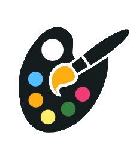

<!--
  Generated template for the StartPage page.

  See http://ionicframework.com/docs/components/#navigation for more info on
  Ionic pages and navigation.
-->
<ion-header>

  <!--<ion-navbar>-->
    <!--<ion-title>Welcome</ion-title>-->
  <!--</ion-navbar>-->

</ion-header>


<ion-content padding class="myview" style="text-align: center;">
      <ion-row style="height: 50px"></ion-row>
      
      <h1 ion-text text-wrap style="text-align: center;color: white;" class="gradRainbow">
        Draw Together
      </h1>
      <ion-row style="height: 100px"></ion-row>
      <button ion-button round  large color="light"
              style="-webkit-text-stroke: 1px black"
              (click)="loginUserAnonymously()" >
        Start Draw
      </button>
      <ion-row style="height: 50px"></ion-row>
  <button ion-button item-end clear block round
          style="color: white;outline-color: black; -webkit-text-stroke: 1px black" (click)="gotoLogin()">
   For Parents - Click here to login
  </button>

</ion-content>
